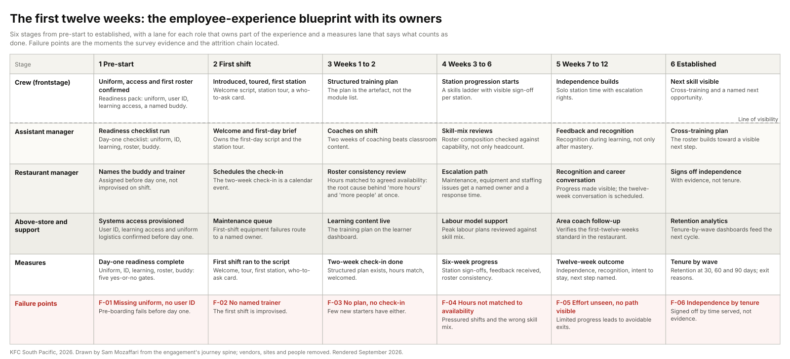
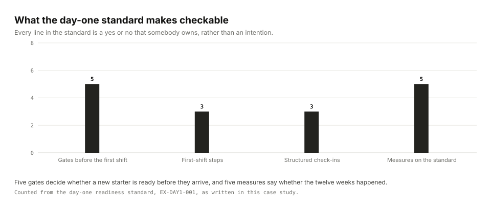
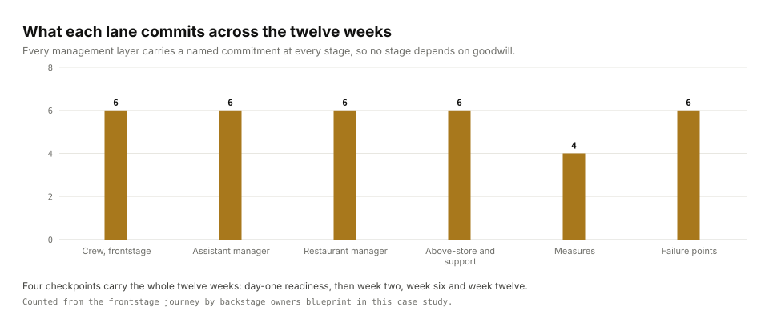
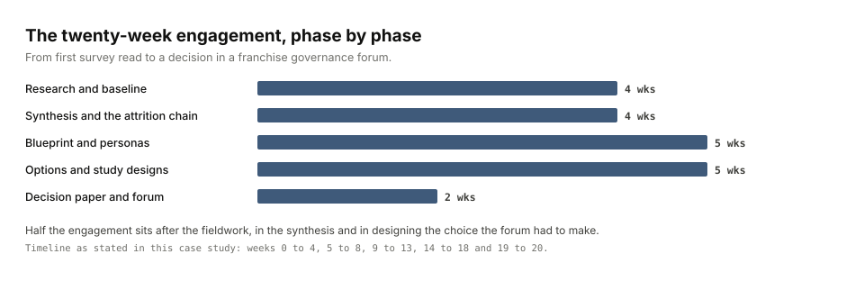

A large franchise network with a crew-heavy workforce and a management spine of restaurant general managers, assistant managers and area coaches. An external consultancy had studied the restaurant structure some years earlier and produced a role-design framework that was issued as pre-reading and never implemented. The same problems had not moved.
My roleExperience Designer leading the design work, working with the employee-experience team.
CollaboratorsThe employee-experience team; the people function; franchise governance forums; the external consultancy's earlier study as the historical anchor.
ConstraintsThe brief scoped out redesigning every process and replacing functional improvement projects. The survey is anonymous and cannot be joined to individual exit records. Franchisees own their restaurants; a central programme has to be sold, not imposed.
Key decisionRefuse to treat three asks as three problems. Synthesise them into one attrition chain and design for consistency rather than for higher engagement: start people ready, back them on shift, notice their effort, show them what comes next.
StatusOptions paper and gated roadmap tabled to the franchise governance forum for decision; the pilot and scale phases designed. The field study and the scorecard change sat with the business.
{kind=link}

The problem
The business asked for three things: a holistic, evidence-based view of the end-to-end team-member experience, because there was no single view of the journey, the moments that matter or the pain points; a single definition of the restaurant-manager role, because five unconnected frameworks existed and none had been rolled out; and relief on turnover, which had run high for years.
The quarterly engagement survey, joined with open-text comments and operating records, said the first quarter of employment was flat: people spent longer at the network without becoming more positive about it. New crew arrived on day one without a uniform, without a training schedule or without system access. Few strongly agreed they had received a manager check-in at two weeks. At twelve weeks, few could see a path forward or felt their effort was recognised. Managers rated the same relationships far more positively than crew did, and manager engagement varied enormously across franchise groups.
The two most-selected fixes for stress, more hours and more people on shift, are the same problem: hours are not always allocated to the right people, at the right time, with the right capability. Rostering, not headcount, sat underneath the experience.
What I did
- Read the survey honestly. The dashboards coded only "strongly agree" as favourable, so most results looked positive until you counted how few people were strongly positive. I adopted and broadcast that reading discipline: every readout carried the caveat, scores below the threshold were treated as action thresholds, and variation between best and worst restaurant was reported beside every average.
- Built the evidence register from the survey exports by role and area, the topic-tagged open-text comments, the onboarding dashboards at two, six and twelve weeks, exit-interview snapshots, the competency matrix and the scorecard, with the earlier external study as the historical anchor.
- Synthesised one attrition chain from the three asks, and rebuilt the survey platform's automatic topic tags by sampling and re-reading before trusting them.
- Blueprinted the first twelve weeks with a lane for each role that owns part of the experience and a measures lane that says what counts as done.
- Designed two field studies to the same depth (sample, method, observations, outputs, strengths, risks) and a third parallel workstream, then wrote the options paper and the decision line so a governance forum could settle it in one meeting.
What the research found
The manager makes or breaks the first twelve weeks. The same brand ran a disengaged restaurant and an engaged one on identical materials. Manager engagement swung widely across franchise groups, and managers rated the relationship with their crew far more positively than the crew did. Protect the committed manager group and the improvement flows downstream.
The experience curve flatlined between week two and week twelve. Tenure was not producing positivity. Whatever happened in those ten weeks was not the design; it was whatever the shift happened to be.
Day one failed on logistics, not attitude. Uniform, user ID, learning access, a roster and a named buddy were the five things a new starter needed and did not reliably get. Each is a yes-or-no gate somebody can own.
The manager role needed an operating model, not an engagement campaign. Five frameworks, none rolled out, and assistant managers as the squeezed middle carrying responsibility without authority, resources, coaching or clarity.
The survey needed a partner instrument. It is anonymous, so cohort-level voice has to be linked to operating records in a pilot to say anything about who left and why. High intent-to-stay among managers was treated as a masking risk, because a healthy role shows up in more than retention.
Three decisions
One attrition chain, not three projects
Evidence. The crew-experience ask, the manager-role ask and the turnover ask all traced to the same sequence of moments, and the rostering insight sat underneath all three.
Alternative considered. Answer the three briefs separately, as they were commissioned. Rejected: three reports would have competed for the same investment and none would have named the root cause.
What we did. Wrote the chain as the programme's problem statement and designed for consistency rather than for a higher engagement score.
Two fully designed options in deliberate tension, decided by a forum
Evidence. The earlier synthesis argued for the first twelve weeks first, because it is bounded and pilotable. The decision options paper argued for the healthy shift first, because it reaches the largest population and the most repeated controllable issues, and sits on the rostering root cause.
Alternative considered. Pick one and present it as the answer. Rejected: the disagreement was real and evidence-argued, and a governance forum settles a well-framed tension better than it accepts a verdict.
What we did. Both study designs written to the same depth, each with its own risk stated plainly (the twelve-weeks model cannot overcome inconsistent hours, weak skill mix or broken equipment; the healthy-shift model can sprawl into a review of every process), a six-reason recommendation, and one decision line: the first twelve weeks tells us how well we bring people in; the healthy shift tells us what they experience every time they come back.
Measure with the strongly-agree discipline, and put team-member experience on the scorecard
Evidence. Dashboards that made weak results look fine; a scorecard that carried customer experience and business growth but not the people delivering them.
Alternative considered. Report the survey as the platform reported it. Rejected: it would have hidden the action thresholds that made the case.
What we did. Every readout carries the coding caveat; team-member experience becomes a formal scorecard line at restaurant and area level beside customer experience and business growth, which is what makes the investment legible to a franchise network.
What was delivered

The day-one readiness standard was written as a specification with owners, so it could be run and checked rather than hoped for.
sop: EX-DAY1-001 Day-one readiness standard version 1.0 owner: restaurant_general_manager # accountable; assistant manager runs the checklist gates_before_first_shift: - uniform_issued # the item most often missing on day one - user_id_provisioned - learning_access_confirmed - first_roster_confirmed # hours matched to agreed availability - buddy_and_trainer_named # assigned before day one, not improvised on shift first_shift: - welcome_script - station_tour - who_to_ask_card check_ins: [week_2, week_6, week_12] # calendar events, structured, recorded measures: - day1_readiness_complete # five yes-or-no gates - check_in_completed_by_week - roster_consistency # planned vs actual hours; zero-shift weeks; late cancellations - station_sign_offs - recognition_during_learning escalation: maintenance, equipment and staffing issues get a named owner and a response time
{kind=link}

Also delivered: the evidence register with the strongly-agree baseline, the attrition chain, personas for crew, assistant manager and restaurant manager, the journey spine with owners below, two study designs with observation protocols and a restaurant-selection matrix, the options paper, the gated roadmap (decide, pilot, scale), the day-one role standard, the KPI tree and the scorecard change.
{kind=link}

| Stage / lane | Pre-start | First shift | Weeks 1–2 | Weeks 3–6 | Weeks 7–12 | Established |
|---|---|---|---|---|---|---|
| Crew (frontstage) | Uniform, access, first roster confirmedReadiness pack: uniform (the top missing item), user ID, learning access, named buddy. | Introduced · tour · first stationWelcome script, station tour, who-to-ask card. | Structured training planOnly a minority strongly agree a plan exists: the plan is the artifact, not the module list. | Station progression startsSkills ladder with visible sign-off per station. | Independence buildsSolo station time with escalation rights. | Next skill visibleCross-training and a named next opportunity. |
| Assistant manager | Readiness checklist runDay-1 checklist: uniform, ID, learning, roster, buddy. | Welcome + first-day briefThe ARM owns the first-day script and the station tour. | Coach on shiftTwo-week coaching beats classroom content. | Skill-mix reviewsRoster composition checked against capability, not just headcount. | Feedback + recognitionRecognition during learning, not only after mastery. | Cross-training planRoster builds toward a visible next step. |
| Restaurant manager | Named buddy + trainer assignedThe buddy is assigned before day one, not improvised on shift. | Check-in scheduledThe 2-week check-in is a calendar event, not an aspiration. | Roster consistency reviewHours matched to agreed availability: the root cause behind "more hours" and "more people" at once. | Escalation pathMaintenance, equipment and staffing issues get a named owner and a response SLA. | Recognition + career conversationProgress made visible; the 12-week career conversation is scheduled. | RGM sign-offIndependence signed off with evidence, not tenure. |
| Above-store & support | Systems access provisionedUser ID, learning access, uniform logistics confirmed before day one. | Maintenance queueFirst-shift equipment failures route to a named owner. | Learning content liveTraining plan content available on the learner dashboard. | Labour model supportPeak labour plans reviewed against skill mix. | Area coach follow-upThe area coach verifies the first-12-weeks standard in-store. | Retention analyticsTenure-by-wave dashboards feed the next cycle. |
| Measures | Day-1 readiness completeUniform · ID · learning · roster · buddy: five yes/no gates. | 2-week check-in doneStructured plan, hours match, welcomed. | 6-week progressStation sign-offs, feedback received, roster consistency. | 12-week outcomeIndependence, recognition, intent to stay, next step named. | ||
| Failure points | F-01 Missing uniform · no user IDPreboarding failure: the employee starts not ready. | F-02 No training scheduleFirst-day plan absent: the earliest credibility gap. | F-03 No check-insTwo-week check-in skipped under shift pressure. | F-04 Hours mismatchRoster ignores availability: the attrition engine. | F-05 No visible pathTwelve weeks in, no named next step. | F-06 Recognition gapEffort unseen: the final push out the door. |
Working files, anonymised: the brief, analysis report, insight register, personas, journey map and blueprint.
How it would be measured
Consistent, productive tenure: fewer avoidable early exits, with even short-tenure leavers leaving with a positive view.
BaselinesThe quarterly engagement survey read on the strongly-agree discipline, by role and area; onboarding dashboards at two, six and twelve weeks; the turnover series; exit-interview snapshots.
Leading driversDay-one readiness; check-in completion at two, six and twelve weeks; roster consistency (planned versus actual hours, zero-shift weeks, late cancellations); training completion and station sign-offs; recognition during learning; manager capacity (protected people-leadership time).
LaggingEngagement and experience-versus-expectations on the strongly-agree reading; intent to stay; retention at 30, 60 and 90 days; exit reasons; the cost of avoidable attrition from the turnover model.
EconomicsA cost-of-turnover model that counts only what the blueprint can move: recruitment and training not spent for each avoidable exit avoided, and productive tenure recovered. The posture is fewer avoidable exits, not zero attrition.
Where the numbers sitThe survey proportions and the cost-of-turnover model are held by the business. Every decision here traces to the evidence register that produced it.
The engagement, for a consulting reader
The employee-experience function, reporting to franchise governance forums.
Scope inA single evidence-based view of the crew experience; the moments that matter; the manager-role definition; where to invest first.
Scope outRedesigning every process; replacing functional improvement projects; structural changes to franchise operating models.
Decisions requestedAdopt the attrition chain as the problem statement; sequence the blueprints (healthy shift, then first twelve weeks, manager enablement in parallel) and fund the field study; embed team-member experience in the scorecard; adopt the strongly-agree reading discipline.
Timeline and gatesAbout twenty weeks: research and baseline (weeks 0 to 4); synthesis and the chain (5 to 8); blueprint and personas (9 to 13); options and study designs (14 to 18); decision paper and forum (19 to 20). Then decide, pilot, scale as gated phases.
Risks managedFranchisee acceptance (forum decision, not central mandate); survey misreading (the coding discipline, enforced); scope sprawl in the healthy-shift study (coverage named as the failure mode); masking by high manager retention (retention never counted alone).
{kind=link}

How this was made
The evidence register, the attrition chain, the blueprint with its owners and measures, the two study designs and the decision brief all came out of one pipeline. Survey exports and open text went in at one end; a register, a journey spine and a one-page brief a governance forum could decide on came out the other.
From exports and open text to typed records
Survey exports by role and area, topic-tagged comments, onboarding dashboards and exit snapshots go in as data and text. A Claude Code command reads them and emits candidate evidence items as JSON. A schema validator refuses the batch unless every source file, role, stage and measure resolves, and a git tag is written before the import runs so a bad batch is one command to undo. Then I read every record against its source and correct the ones where the extraction flattened what somebody meant. The survey platform's own automatic topic tags went through the same treatment: sampled, re-read, and only then trusted.
From records to artefacts
The records are the source and everything else is an output: the evidence register, the attrition chain, the journey spine with owners below it, the personas and the measures each stage is checked by. Because all of them are generated from the same records, none of them can drift from the others, and a claim in the decision brief can be walked back to the row that produced it.
The design system the artefacts are built on
Posters, briefs and screens are drawn on a token file and a component file, not in a canvas and not from a UI kit: a seven-step type scale on a 14px base, a 4px spacing grid, three radii, one neutral ramp and four status pairs. A contrast script checks every text pair at 4.5 to 1 and every border at 3 to 1, and a site lint checks the counts, the language and the artefacts. Both fail the build rather than warn, so nothing ships with a colour or a claim that has not passed.
Figma and handover
Artefacts are exported as artboards with a component specification beside them, so the people who run the pilot get the states, the tokens and the rules rather than a picture.
Where AI stops
Three jobs are machine work here: running the score pipelines from the same query set so no headline is hand-typed, extracting evidence items into the register with their source and measure, and drafting both study designs to one specification so the comparison is fair. A second model was pointed at each design's risk section to attack it, and its flags went into the decision paper word for word. Every one of those has a human step after it. The reading discipline, the chain, the blueprint's owners and measures, and the decision line were people's work.